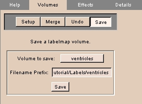
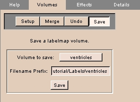

The Editor panel appears.

- To use an existing file name, click Save.
- To use a new file name, enter the Filename Prefix. (It is often simplest to use the same name as the Volume to Save.)
After you create a label map, you can save the label map volume.
To save the label map:
